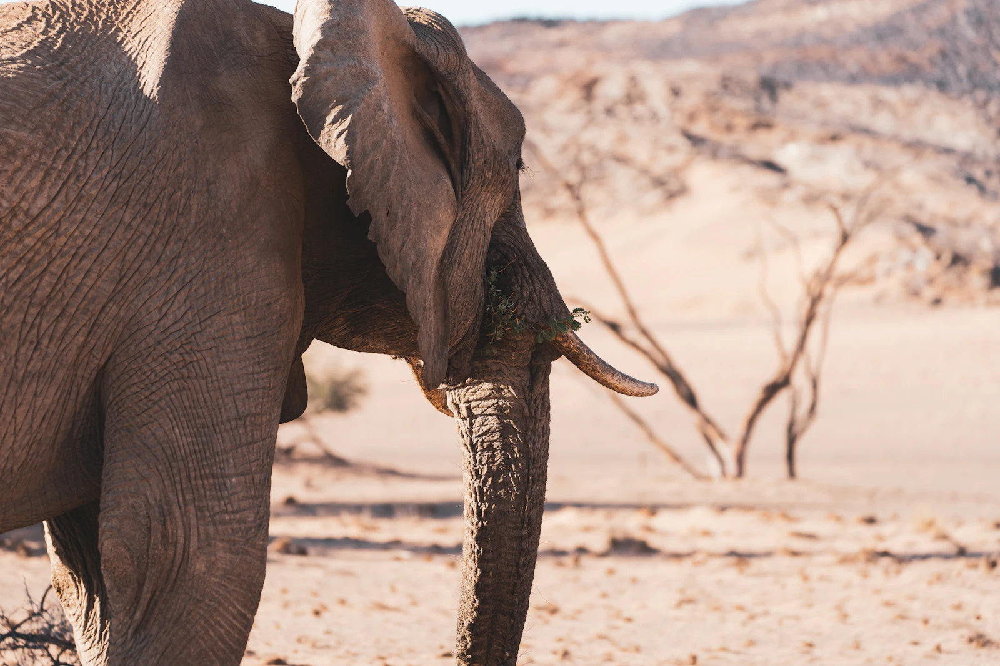
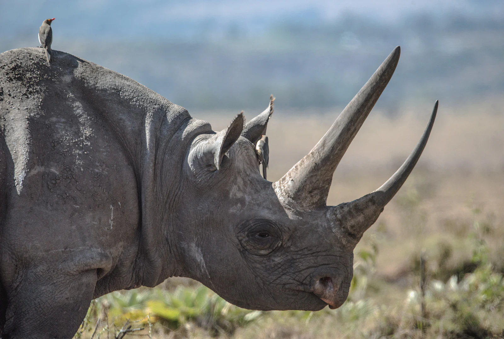

Sentinel Conservation Consulting — Namibia & beyond
Securing ground
for wildlife.
Restoring the routes between.
Sentinel
Sentinel Conservation Consulting — Namibia & beyond
Restoring the routes between.
00The window
Namibia still holds something increasingly rare: enough unbroken land, and enough will, to secure a future for black rhino and desert elephant at landscape scale.
That window will not stay open on its own. It closes one fence, one farm boundary, one unresolved conflict at a time.
01The routes
Between the Namib and Etosha, along riverbeds that run only after rain, desert-adapted elephants followed routes older than any map.
Each animal below is one elephant
3,000
An estimated 2,500 to 3,500 desert-adapted elephants once ranged Namibia's north-west, moving freely between water and forage.

02The cut
Farms, fences, settlements. Each boundary reasonable on its own. Together, they cut the routes the herds depend on.
Isolation
Cut off from each other, populations shrink. Where routes close, conflict opens: elephants break fences to reach water, and communities carry a cost conservation created.
Remaining in the south
21
In the southern range, as few as twenty-one individuals remain.
Source: Connected Conservation Foundation satellite-tracking study, Erongo & Kunene. Visualisation is illustrative.
03Under pressure
Each light on the ground below is one animal.

Poached in Namibia, 2025
0
A 53% reduction, and the lowest level in more than a decade. Proof that intelligence-led, well-resourced protection changes outcomes. It is still forty-one.
January to April, 2026
+0
Further incidents in the first four months of 2026, seven of them inside a formally protected park. The threat has not passed.
Sources: WWF; Namibian Ministry of Environment, Forestry and Tourism; Xinhua (Jan–Apr 2026).
04The gap
Hold the mandate and the capital, not always the capacity to turn ambition into functioning land.
Hold the land itself, not always ecology, security and community relations at once.
Carry the cost of conflict, and are the first line of protection when they have a reason to be.
Sentinel stands in that gap. Not a desk-based consultancy: everything we offer has already been proven on the ground.
05The method
Four working pillars around one centre: secured, living ground.
01 / 04 — Security
ProofIntelligence-led anti-poaching work alongside the Namibian Police and the Protected Resources Unit.
02 / 04 — Land
ProofGondwana ERP Rhino Sanctuary: ~40,000 ha secured within a ~200,000 ha protected landscape.
03 / 04 — Corridor
ProofHuab Elephant Corridor: ~60,000 ha encompassed, ~35,000 ha secured directly.
04 / 04 — Coexistence
ProofPartnerships with neighbouring conservation-minded landowners along the Huab corridor.
06Proof of work
Case 01 — Southern Namibia · Fish River Canyon
0ha
secured · within ~200,000 ha of protected landscape
Case 02 — North-west Namibia · Huab River
0ha
secured directly · of a ~60,000 ha corridor
07The founder
His path into conservation was not academic. It was built over three decades, one stage at a time.
Stage 01 — Discipline
Border deployment, then harbour patrol in Simon's Town. Operational structure under pressure.
Stage 02 — Corporate leadership
From retail administrative assistant to Retail Manager for the country. Governance, budgets and board reporting, understood from the inside.
Stage 03 — Enterprise & wilderness
A safety-equipment business sold to a Johannesburg group, then years as a registered professional hunter in Namibia's most remote country.
Stage 04 — Endurance
Founder of the Namib Quest and the Fish River Canyon Ultra. Eight years moving people, crews and equipment through wilderness.
Stage 05 — Intelligence
Intelligence Support Against Poaching, with the Namibian Police and the Protected Resources Unit: sting operations against the pangolin trade and rhino poaching.
Stage 06 — 2022
Elephants, Rhinos & People. Two landscape-scale projects later, a significant regional initiative.
“Built by doing,
not by advising.”
08CSI project partner
One partner from the first conversation to the final impact report: designed, run in remote places, and reported to board standard.
CSI focus, scorecard targets, regions and goals.
Sites, landowners, partners, budget, KPIs.
Funding agreement, ring-fenced accounts, baselines.
Rangers, contractors and spending on the ground.
Live dashboard, board packs, annual impact report.
Projects that protect and restore habitat can, once independently verified, generate carbon and biodiversity credits: a medium-to-long-term return on the investment.
09Work with Sentinel
A scoped site visit and land, wildlife and security assessment, closing in a clear go / no-go report.
Land assembly, security protocol, corridor plan and community partnership, carried through to the ground.
A standing, multi-year advisory relationship for a government, conservancy network or funder.
Conservation projects designed for CSI budgets, managed on the ground and reported to your board.
For private landowners · governments & conservancies · philanthropic funders · corporates & ESG partners
10The window is still open
The most useful first conversation is usually the shortest: a single piece of land, a single corridor question, a single proposal that needs a credible partner.
Tinus HansenFounder & Principal Consultant